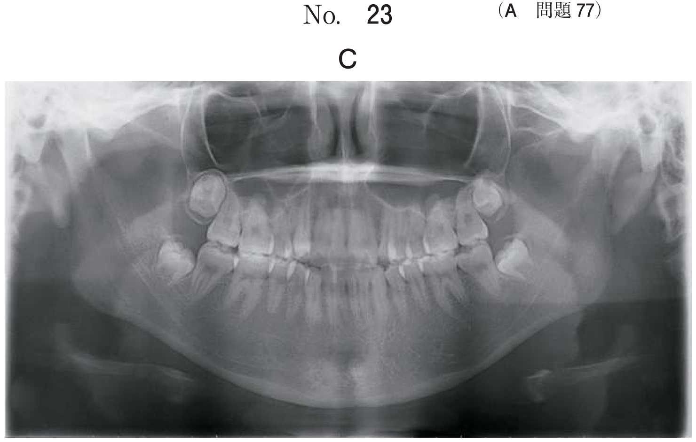

心肺蘇生法に必要な解剖
気道の全体像
心肺蘇生法では、気道確保・人工呼吸・気管挿管・緊急気道確保など、すべての手技に解剖学的知識が必要となる。
上気道と下気道
| 区分 | 構造物 |
|---|---|
| 上気道 | 鼻腔・口腔 → 咽頭（鼻咽頭・中咽頭・下咽頭）→ 喉頭 |
| 下気道 | 気管 → 気管分岐部 → 左右主気管支 → 肺 |
- 舌根沈下：意識消失時に舌根が後方に落ち込み、中咽頭で気道を閉塞する→頭部後屈−あご先挙上で解除
- 異物：食物や歯科材料による気道閉塞→腹部突き上げ法（Heimlich法）で解除
- 喉頭痙攣：声門閉鎖筋の攣縮→筋弛緩薬の投与
喉頭の解剖
喉頭は気管挿管の際に最も重要な構造物である。喉頭展開（喉頭鏡を使用）して声門を直視下で確認し、気管チューブを挿入する。
喉頭の主要構造
| 構造物 | 特徴 | 臨床的意義 |
|---|---|---|
| 喉頭蓋 | 嚥下時に喉頭入口部を閉鎖する蓋状の軟骨 | 喉頭鏡のブレードで持ち上げて声門を展開。ラリンジアルマスクの先端は喉頭蓋谷に留置 |
| 喉頭蓋谷 | 舌根と喉頭蓋の間のくぼみ | マッキントッシュ型喉頭鏡ブレードの先端をここに置く |
| 声門 | 左右の声帯ひだの間の隙間 | 気管チューブはここを通過して気管に入る |
| 披裂軟骨 | 声帯の後端に付着する対の軟骨 | 気管挿管時に声門とともに確認する目印 |
| 声帯 | 左右一対の粘膜ひだ | 気管チューブ通過時に損傷しないよう注意 |
次の文により87、88 の問いに答えよ。 33歳の男性。全身麻酔下に下顎隆起形成術を行うこととした。麻酔導入時に行っているある手技の写真（別冊No. 33）を別に示す。
器具の操作で気管チューブを挿入する際に確認すべきなのはどれか。2つ選べ。

b 口蓋垂
c 披裂軟骨
d 咽頭扁桃
e 気管分岐部
【解説】写真は喉頭鏡による喉頭展開（気管挿管の手技）。気管チューブ挿入時に確認すべきは声門（a）と披裂軟骨（c）。声門は気管チューブが通過する部位であり、披裂軟骨は声門の後端にある目印となる構造物。口蓋垂（b）・咽頭扁桃（d）は咽頭の構造物で挿管時の確認対象ではない。気管分岐部（e）は挿管後にチューブ先端の位置を確認するもの。
気管の解剖と気管チューブの位置
気管の基本構造
- 気管はC字型の気管軟骨（約16〜20個）で支持される
- 気管の長さ：成人で約10〜12cm
- 気管分岐部：第4〜5胸椎の高さで左右の主気管支に分かれる
- 右主気管支は左に比べて太く短く、角度が急（垂直に近い）→誤挿管・異物の迷入は右に起こりやすい
気管チューブの適切な位置
気管チューブの先端は声門と気管分岐部の間に位置させる。気管分岐部より深く挿入すると片肺挿管となり、浅すぎると抜けるリスクがある。
気管チューブと声門、気管、気管支の位置関係の図（別冊No.7）を別に示す。
適切な気管チューブの位置はどれか。1つ選べ。

b イ
c ウ
d エ
e オ
【解説】気管チューブの先端は声門と気管分岐部の中間付近に位置するのが適切。「ウ」は気管の中央部に相当し、適切な位置。声門直下（浅すぎ）では抜けやすく、気管分岐部付近（深すぎ）では片肺挿管のリスクがある。
前頸部の解剖
緊急気道確保（輪状甲状靭帯穿刺・切開）や星状神経節ブロックなど、前頸部の手技を行う際に必要な解剖学的知識である。
前頸部の構造物（上から順に）
| 構造物 | 頸椎レベル | 臨床的意義 |
|---|---|---|
| 舌骨 | C3 | 舌骨上筋群・舌骨下筋群の付着部 |
| 甲状軟骨 | C4-5 | 喉頭隆起（のどぼとけ）。喉頭鏡で圧迫することがある |
| 輪状甲状靭帯 | — | 緊急気道確保の穿刺・切開部位 |
| 輪状軟骨 | C6 | 気道で唯一の完全なリング状軟骨。SGBのランドマーク |
| 気管軟骨 | C7以下 | C字型の不完全なリング。後壁は膜性壁 |
- 輪状甲状靭帯→緊急気道確保（輪状甲状靭帯穿刺・切開）
- 第6頸椎横突起（輪状軟骨の高さ）→星状神経節ブロック（SGB）
- 輪状軟骨→Sellick法（輪状軟骨圧迫：胃内容物の逆流防止）
胸部の解剖（胸骨圧迫に関連）
胸骨の構造
| 部位 | 特徴 |
|---|---|
| 胸骨柄 | 胸骨の上部。胸骨切痕がある |
| 胸骨体 | 胸骨の本体部分 |
| 剣状突起 | 胸骨の最下端 |
胸骨圧迫は胸骨の下半分（胸骨体の下半分）を圧迫する。胸骨の後方に心臓が位置しており、胸骨を圧迫することで心臓を圧迫し血流を生じさせる。
- 圧迫部位：胸骨の下半分（両乳頭を結ぶ線の中央が目安）
- 剣状突起を圧迫しない（肝臓損傷のリスク）
- 心臓は胸骨の後方、やや左寄りに位置する
- 圧迫により胸腔内圧が上昇し、心臓および大血管から血液が駆出される
脈拍触知の解剖
心肺蘇生時の脈拍確認には総頸動脈を用いる。
総頸動脈の触知部位
- 気管と胸鎖乳突筋前縁の間のくぼみ
- 触知方法：気管の上に示指と中指を置き、外側へ滑すように下ろす
- 総頸動脈は心臓に最も近い動脈であり、低血圧でも触知しやすい
頸部の血管と神経
| 構造物 | 位置 | 臨床的意義 |
|---|---|---|
| 総頸動脈 | 胸鎖乳突筋の深部 | 脈拍触知。SGBの合併症（誤穿刺） |
| 内頸静脈 | 総頸動脈の外側 | 中心静脈路の確保 |
| 迷走神経 | 総頸動脈と内頸静脈の間 | 気管挿管時の迷走神経反射→徐脈 |
| 椎骨動脈 | 頸椎横突起内 | SGB時の合併症（誤穿刺→局所麻酔薬中毒） |